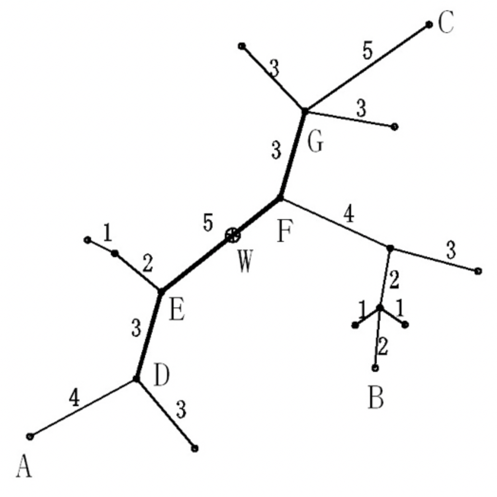

设 $T=(V,E,W)$ 是一个无圈且连通的无向图（也称为无根树），每条边带有正整数的权，我们称 $T$ 为树网（tree network），其中 $V, E$ 分别表示结点与边的集合，$W$ 表示各边长度的集合，并设 $T$ 有 $n$ 个结点。
路径：树网中任何两结点 $a,b$ 都存在唯一的一条简单路径，用 $d(a,b)$ 表示以 $a,b$ 为端点的路径的长度，它是该路径上各边长度之和。我们称 $d(a,b)$ 为 $a,b$ 两结点间的距离。
一点 $v$ 到一条路径 $P$ 的距离为该点与 $P$ 上的最近的结点的距离：
$d(v,P)=\min \{d(v,u)，u$ 为路径 $P$ 上的结点$\}$。
树网的直径：树网中最长的路径称为树网的直径。对于给定的树网 $T$，直径不一定是唯一的，但可以证明：各直径的中点（不一定恰好是某个结点，可能在某条边的内部）是唯一的，我们称该点为树网的中心。
偏心距$ECC(F)$：树网 $T$ 中距路径 $F$ 最远的结点到路径 $F$ 的距离，即
$ECC(F)=\max\{d(v,F),v \in V\}$。
任务：对于给定的树网 $T=(V, E,W)$ 和非负整数 $s$，求一个路径 $F$，它是某直径上的一段路径（该路径两端均为树网中的结点），其长度不超过 $s$（可以等于 $s$），使偏心距 $ECC(F)$ 最小。我们称这个路径为树网 $T=(V,E,W)$ 的核（Core）。必要时，$F$ 可以退化为某个结点。一般来说，在上述定义下，核不一定只有一个，但最小偏心距是唯一的。
下面的图给出了树网的一个实例。图中，A-B 与 A-C 是两条直径，长度均为 20。点 $W$ 是树网的中心，EF 边的长度为5。如果指定 $s=11$，则树网的核为路径 DEFG（也可以取为路径 DEF），偏心距为 $8$。如果指定 $s=0$（或 $s=1$、$s=2$），则树网的核为结点 $F$，偏心距为 $12$。

 Comet OJ
Comet OJ